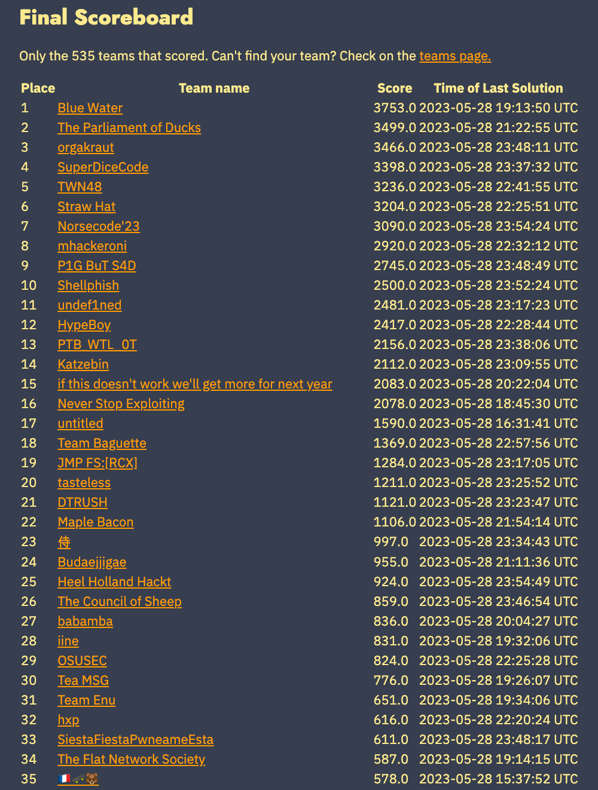
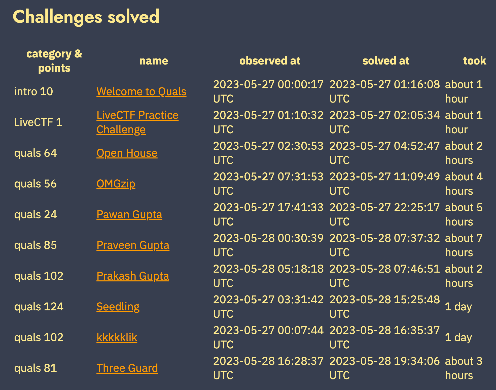

Team Enu
DEF CON CTF 予選 2023まとめ
2023年もTeam Enuは、DEF CON CTF 予選に参加しました。

結果は651点を獲得し、31位となりました。競技中に解けた問題は、次の通りです。

参加したチームメンバーにより、それぞれの問題についてのwriteupが公開されています。
- kkkkklik: NTTセキュリティ・ジャパンのコンサルティングサービス部 濱崎さんによる解説(https://techblog.security.ntt/102ifsw)
- Visual Basic 6.0で書かれたWindowsアプリのリバースエンジニアリングにより、暗号化され、隠されたフラグを探す問題です
- LiveCTF: NFLabs 市岡さんによる解説(https://blog.nflabs.jp/entry/2023/06/01/132700)
- 2019年に一度だけ実施されたspeedrunっぽい、制限時間内に速く解くことを求められる問題たちです
- Pawan Gupta, Praveen Gupta, Prakash Gupta: NFLabsのインターン生による解説があります(https://blog.nflabs.jp/entry/2023/06/21/093000)
- ChatGPTを騙して(プロンプトを上手く調整して)、本来は教えてくれないフラグを答えさせたり、バックドアをコンパイルさせて、実行させる問題です
- Open House: NTTセキュリティ・ジャパンのグローバル技術開発部 青島による解説(https://jp.security.ntt/tech_blog/102ig84)
- pwnの基本問題ですが、時間の限られた中、サクッと解くために必要な考え方についてまとめました
興味のある方は、ぜひ上のリンクからご覧ください。
なお、今年度はNFLabsのインターン生にもご協力いただきました。 インターン生による感想(https://blog.nflabs.jp/entry/2023/06/07/130000)も公開されていますので、興味のある方は、ぜひご覧ください。
引き続きTeam Enuでは、NTTグループ内でCTFに興味のある仲間を探してます。 すでに自信のある方はもちろん、そうでない方も、「自分で実際に手を動かしながら、一歩ずつステップアップしていきたい」という気持ちと行動力があれば、大歓迎です。 学生さんも交えて、セキュリティの技術を磨く取り組みを今後も続けて参りますので、学生の皆さんも興味あれば、ぜひご連絡ください!!

Team Enu
Team EnuのWriteupや活動の紹介を掲載しています。